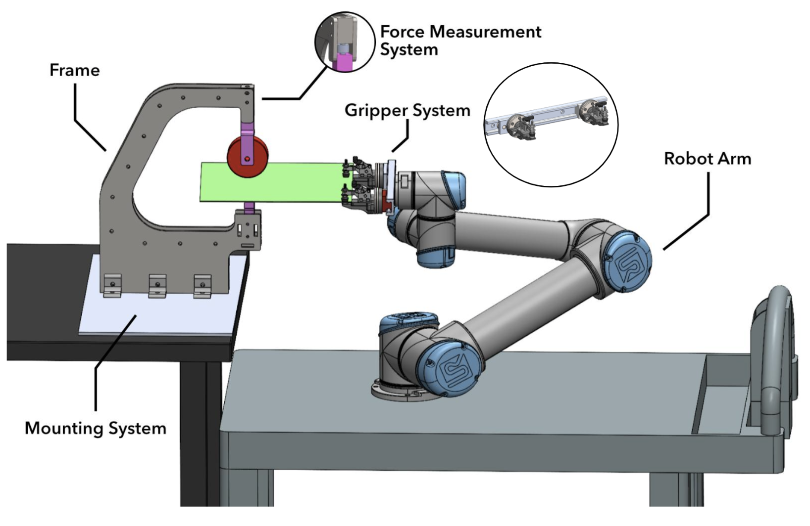
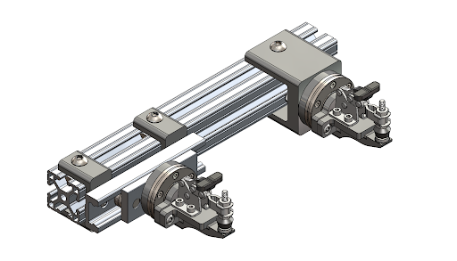
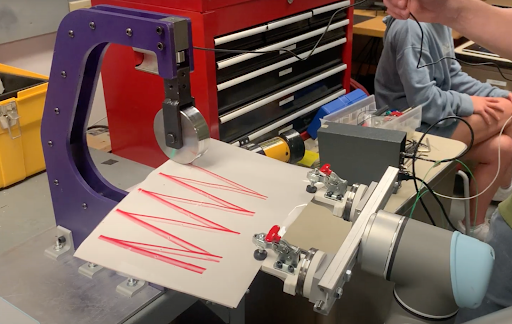
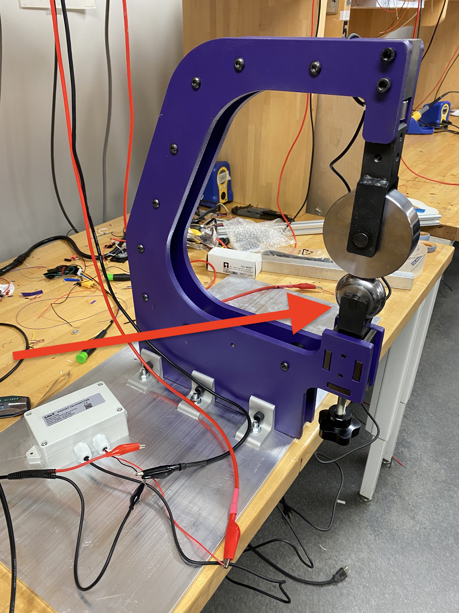
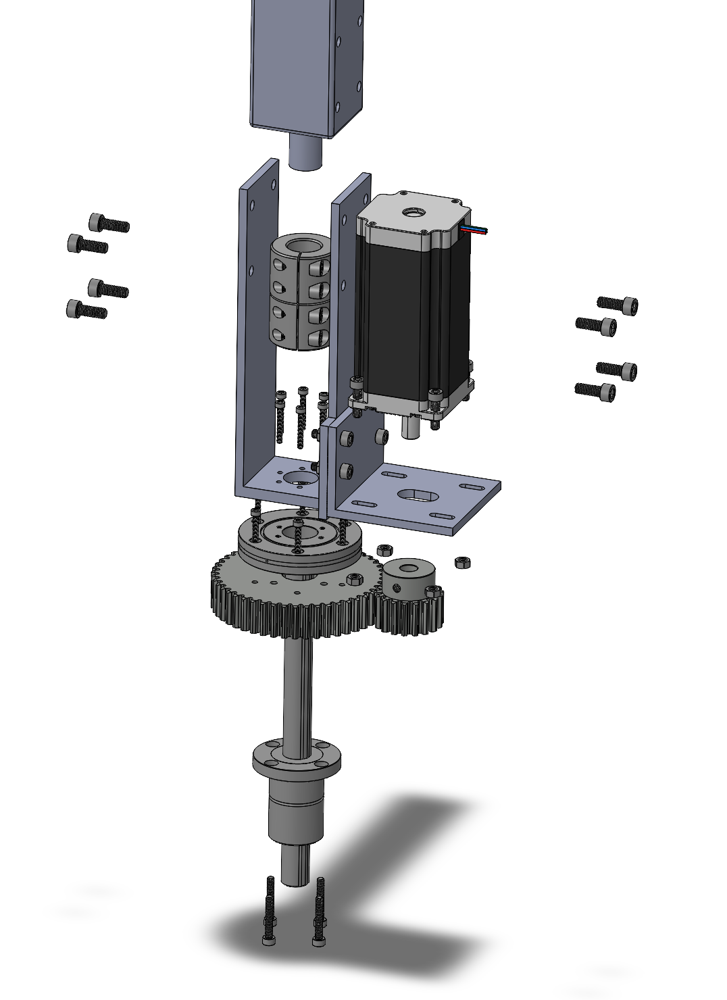

Robotic English Wheeling
A desktop robotic English wheel that automates an artisan sheet-metal forming process, then a motorized anvil wheel to close the force loop.
My part: Force measurement system and UR5e toolpath programming on the capstone team, then the motorized auto anvil wheel as a graduate researcher.
The project
My senior design team partnered with Northwestern’s Advanced Manufacturing Processes Lab (AMPL), which is working to fully automate English wheeling, an artisan sheet-metal forming technique. The long-term goal is an Industry 4.0 process that can use AI to generate toolpaths for complex parts.
We built a desktop robotic English wheel for that research. Its key components were a force measurement system to report the force on the sheet metal, and a gripper that conforms as the sheet deforms: a sliding rail and face-mounted cross roller bearings let the clamps move with the part.
We presented the work at the ASME 2023 International Manufacturing Science and Engineering Conference and won 1st place in the student manufacturing design competition.


My work on the capstone
I implemented the force measurement system and programmed the cobot’s trajectory. After testing to find the right force range, I designed a load cell mount that threads into the English wheel’s frame, then calibrated and wired it through an amplifier to read force with an NI DAQ and LabVIEW.
I learned Universal Robots’ scripting language and used inverse kinematics to program the triangular toolpath (right).

Follow-on: auto anvil wheel
After the capstone, I joined AMPL as a graduate researcher to keep pushing toward full automation. I mechanized the raising and lowering of the anvil wheel (red, right), which rides on a lead screw and sets how much force is applied while forming.
I calculated the force needed at the highest load with a factor of safety, used gear theory to size gears for tooth load and lifetime, and chose a stepper motor with ample torque. I designed the system in SolidWorks with brackets for CNC machining, built around a PID loop that raises the anvil wheel to hit a target forming force using live load cell readings.


Video
Published: Suarez, D., et al., incl. Forbes, B. On the feasibility of an integrated English wheel system. Journal of Manufacturing Systems 74, 665–675 (2024).